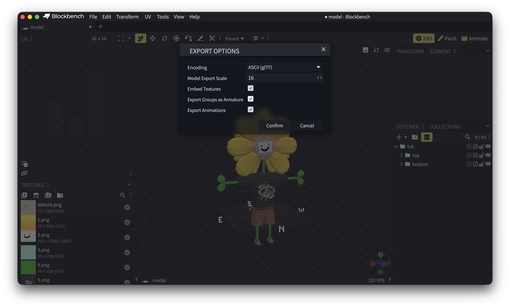
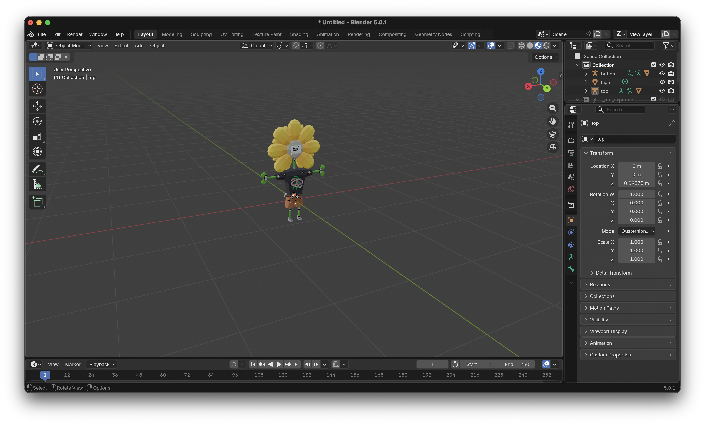
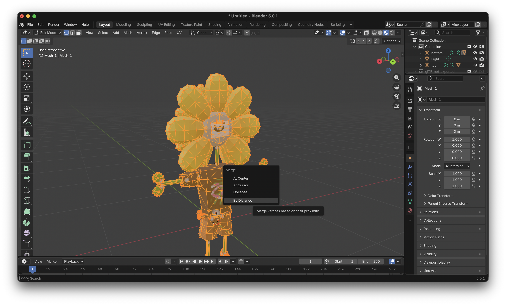
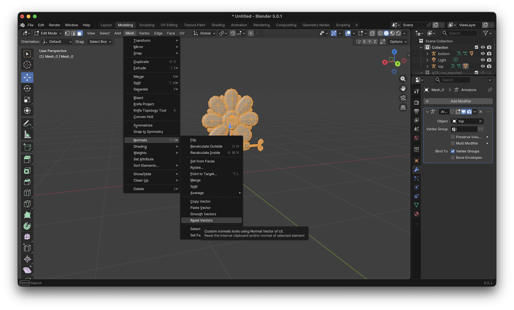

How to import blockbench models into blender

For most of my renders, I use a program called blockbench which I use to make the low-poly characters and models
But importing the models into blender can be tricky as the models dont work as intended once put into blender
So here are the steps that I take that help me get models from blockbench into blender properly
Step 1
Export model
Get your blockbench model and go to File > Export > Export GLTF model
Make sure embed textured is checked and check export groups as armature if you want all of your meshes to be merged and for the program to auto rig your character/model

I find that GLTF is the easiest one to put into blender however you can pick another file type but the results will vary
Step 2
Import into blender
Now open blender and open a new default file
Delete the default cube and navigate to File > Import > Gltf 2.0
Now select the .gltf file you just exported
Your model should now be in blender

Step 3
Merge edges
When you import a model from blockbench into blender the faces become disconnected
To fix this select all of the meshes that have been imported and go into edit mode
Make sure that you are on either vertex or edge selection mode and press A then M
A merge popup should appear and you need to select 'By Distance'

Step 4
Reset normals
Once the previous step is completed the normals (shading) of the model may look strange
To fix this, stay in edit mode and make sure everything is still selected
Navigate to Mesh > Normals and click on 'Reset Vectors'

Finally go back to object mode and right click the selected meshes and click shade flat
(this is optional but suggested if you want the model to look like how it was when it was originally imported)
Thats All
Hopefully this helped you if you wanted to know